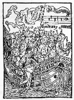

<html>

<head>

<title>The Annotated "Ship of Fools"</title>

</head>

<body>

<i>"Time there was and plenty, but from that cup no more"</i>



<h2>The <i>Annotated</i> "Ship of Fools"</h2>

An installment in <a href="gdhome.html"> The

<i>Annotated</i> Grateful Dead Lyrics.</a><br>

By <a href="david.html">David Dodd</a><br>

1997-98 Research Associate, Music Dept., University of California, Santa Cruz

<hr>

<a href="copyrigh.html">Copyright notice</a>

<hr>

<a href="#title"><b>"Ship of Fools"</b></a><br>

Words by Robert Hunter; music by Jerry Garcia<br>
Copyright Ice Nine Publishing; used by permission.
<p>
<blockquote>
Went to see the captain<br>
strangest I could find<br>
Layed my proposition down<br>
Layed it on the line;<br>
I won't slave for beggar's pay<br>
likewise gold and jewels<br>
but I would slave to learn the way<br>
to sink your ship of fools<br>
<br>
<a href="#ship">Ship of fools</a><br>
on a cruel sea<br>
Ship of fools<br>
sail away from me<br>
<br>
It was later than I thought<br>
when I first believed you<br>
now I cannot share your laughter<br>
Ship of Fools<br>
<br>
Saw your first ship sink and drown<br>
from rocking of the boat<br>
and all that could not sink or swim<br>
was just left there to float<br>
I won't leave you drifting down<br>
but woah it makes me wild<br>
with thirty years upon my head<br>
to have you call me child<br>
<br>
Ship of fools<br>
on a cruel sea<br>
Ship of fools<br>
sail away from me<br>
<br>
It was later than I thought<br>
when I first believed you<br>
now I cannot share your laughter<br>
Ship of Fools<br>
<br>
The bottles stand as empty<br>
as they were filled before<br>
Time there was and plenty<br>
but from that cup no more<br>
<a href="#caution">Though I could not caution all</a>
I yet may warn a few:<br>
Don't lend your hand to raise no flag<br>
atop no ship of fools <br>
<br>
Ship of fools<br>
on a cruel sea<br>
Ship of fools<br>
sail away from me<br>
<br>
It was later than I thought<br>
when I first believed you<br>
now I cannot share your laughter<br>
Ship of Fools<br>
No I cannot share your laughter<br>
Ship of Fools<br>
</blockquote>


<hr>

<h3><a name="title">"Ship of Fools" </a></h3>

Recorded on

<ul>

<li><cite><a href="discog1.html#mars">From the Mars Hotel</a></cite>

<li><cite><a href="discog2.html#steal">Steal Your Face</a></cite>

</ul>

Covered by Elvis Costello on <a href="tribute.html#deadicated">Deadicated</a>.

<p>

First performance: February 22, 1974 at Winterland, San Francisco. Appeared in the second set

between "Me and My Uncle" and "The Race is On." Also appearing for the first time in this show

were <a href="usblues.html">"U.S. Blues"</a> and <a href="must.html">"It Must Have Been the Roses."</a>

<hr>

<h3><a name="ship">Ship of Fools</a></h3>

<a href="http://sunsite.unc.edu/cjackson/bosch/" target="new">Hieronymus Bosch's</a> painting 

from the <a href="http://www.emf.net/wm/" target="new">Louvre</a>, 

<a href="http://sunsite.unc.edu/cjackson/bosch/p-bosch8.htm" target="new">"Ship of Fools"</a> (ca. 1490)<br>

<p>

<p>

<p>



Woodcut, attributed to Albrecht Durer, from Sebastian Brant's <cite>Das

Narrenschiff</cite> (1494)

<p>

From <cite><a href="biblio.html#middle">The Dictionary of the Middle Ages'</a></cite> article on

Sebastian Brant (1457-1521):

<blockquote>

"Brant's fame stems from <cite>Das Narrenschiff</cite> (The ship of fools), published in 

1494. The book became so popular that within the first year it went through three editions. 

...

<p>

In concept and style <cite>Das Narrenschiff</cite> belongs to the satiric genre of the

Middle Ages, and stands in an old tradition, to a degree biblical in origin. 

...

<p>

Brant sees follies as sins. This concept makes up the framework of his book: a ship--an entire

fleet at first--sets off from Basel to the paradise of fools. ...<p>

Each chapter chastizes a type of fool who is depicted graphically in the accompanying woodcut."

</blockquote>
<p>
This note from a reader:
<blockquote>
Subject:  ship of fools<br>
Date: Fri, 24 Mar 2000 13:20:17 -0500<br>
From: James Molenda <jmmole@mail.wm.edu>
<p>
I read in Michael Foucault's <cite>Madness and Civilization</cite> that a
ship of fools referred to the practice of putting the local 'insanes'
onto ships to help as crew people; supposedly, 'regular' people
thought that the fools, shipmen, and the sea all had an affinity for
each other.  so, when a new ship would port in a town, people
would come and have a chuckle at the expense of the kind 'fools.'
so, the sea was an escape for these well-wishing souls from the
cruel sea of humanity on the mainland.  
<p>
the excerpt comes from the intro, written by Jose 
Barchilon, m.d., of foucault's <cite>madness and civilization</cite>.
on page vi:
<blockquote>
Renaissance men developed a delightful, yet horrible
way of dealing with their mad denizens: they were put
on a ship and entrusted to mariners because folly, water,
and sea, as everyone then "knew," had an affinity for
each other.  Thus, "Ship of Fools" crisscrossed the sea
and canals of Europe with their comic and pathetic cargo
of souls.  Some of them found pleasure and even a cure in
the changing surroundings, in the isolation of being cast off,
while others withdrew further, became worse, or died alone
and away from their families.  The cities and villages which
had thus rid themselves of their crazed and crazy, could now take
pleasure in watching the exciting sideshow when a ship full of
foreign lunatics would dock at their harbors . . . 
</blockquote>
Translation by Richard Howard, Vintage Books, a Division
of Random House, 1988
<p>
if there is anything else i can help you out with on your project,
just ask.  
<p>
adios, james  
</blockquote>
<p>

<a href="http://us.imdb.com/AName?Porter,+Katherine+Anne+(III)" target="new">Katherine Anne Porter's</a> novel <cite>Ship of Fools</cite> (1962) uses the metaphor of the ship <i>Vera</i>

to represent the entire world as it drifts into World War II. Her note at the

start of the novel states:

<blockquote>

"The title of this book is a translation from the German of <cite>Das

Narrenschiff</cite>, a moral allegory by Sebastian Brant first published in

Latin as <cite>Stultifera Navis</cite> in 1494. I read it in Basel in the

summer of 1932 when I had still vividly in mind the impressions of my first

voyage to Europe. When I began thinking about my novel, I took for my own 

this simple almost universal image of the ship of thie world on its voyage

to eternity. It is by no means new--it was very old and durable and dearly 

familiar when Brant used it; and it suits my purpose exactly. I am a 

passenger on that ship. -- K.A.P."

</blockquote>

<p>

Porter's book was made into a <a href="http://us.imdb.com/Title?Ship+of+Fools+(1965)" target="new">memorable movie</a> with an all-star cast in 1965.

<p>

Gary Larson had a wonderful cartoon on the topic.

<hr>

<h3><a name="caution">Though I Could Not Caution All</a></h3>

The title of an unpublished novel by yours truly.  No Dead content.

<hr>

First posted: August 22, 1995<br>

Last revised: March 25, 2000
<pre>




























</pre>
</body>

</html>
